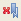

Temo lahko lažje poiščete tako, da nastavite zaznamek.
Za informacijski center, ki ste ga razvili na strežniku in si ga ogledujete prek intraneta ali interneta, lahko zaznamke za teme shranite med zaznamke svojega brskalnika ali v meni Priljubljene.
Za informacijski center, ki je nameščen lokalno na računalniku, kjer si ga tudi ogledujete, lahko zaznamke za teme shranite samo med zaznamke.
- Če želite nastaviti zaznamek za trenutno temo, naredite naslednje:
- V informacijskem centru, razmeščenem na strežniku, z desno miškino tipko kliknite na katero koli prazno področje na trenutni strani, če želite odpreti meni. Če želite temo shraniti v eno od map Priljubljene, izberite možnost Dodaj med priljubljene ali Dodaj med zaznamke.
- V informacijskem centru, nameščenem na vašem računalniku, v orodni vrstici zgoraj nad desnim vogalom kliknite Zaznamek (
 ).
).
- Izvedite naslednje korake, če si želite ogledati zaznamke:
- V informacijskem centru, razmeščenem na strežniku, je
ikona Zaznamek Ikona () je prikazana samo, če brskate po straneh z brskalnikom Internet Explorer. Če želite najti zaznamke, ki ste jih ustvarili, lahko v brskalniku Internet Explorer kliknete meni Priljubljene.
- V informacijskem centru, nameščenem na vašem računalniku, v orodni vrstici na dnu pogleda Zaznamki kliknite zavihek Zaznamki (
 ).
).
- V informacijskem centru, razmeščenem na strežniku, je
ikona Zaznamek Ikona (
- Zaznamek lahko izbrišete na naslednji način:
- V informacijskem centru, razmeščenem na strežniku, v brskalniku Internet Explorer odprite meni Priljubljene in poiščite zaznamek. Kliknite nanj z desno miškino tipko in na meniju izberite Izbriši.
- V informacijskem centru, nameščenem na vašem računalniku, kliknite zavihek Zaznamki (), izberite ime teme v podoknu Tema in v orodni vrstici kliknite Izbriši izbrani zaznamek (
 ).
).
- Prav tako lahko izbrišete vse zaznamke v informacijskem centru, ki se izvaja lokalno na vašem
računalniku. Kliknite zavihek Zaznamki (),
nato pa na orodni vrstici kliknite še Izbriši vse zaznamke ().